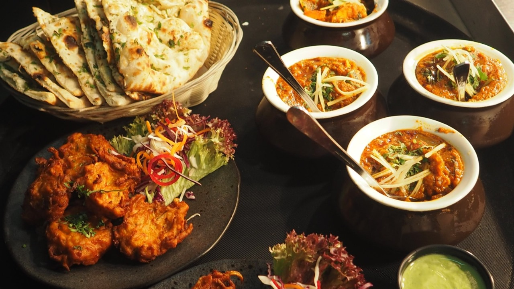

All modern culinary creations and gastronomic experiences are crafted using three
fundamental elements: Ingredients, Techniques, and Presentation. These are the essential
components of the food world.
In this post, let's delve into the world of Ingredients. We will explore what Ingredients are all
about and why you too should embrace the art of culinary crafting.

Report Form
Subject
CAT1
Exam
English
19
40
Kiswahili
20
38
Maths
19
29
P.E
29
58
What are Ingredients?
Ingredients are the building blocks of every dish. They are the elements that chefs use to
structure and define the flavor profile of a meal (not just mere components).
Ingredients consist of various elements that contribute to different tastes and textures:
spices, herbs, proteins, carbohydrates, and more. Culinary enthusiasts understand
Ingredients and assemble them to create delightful dishes.
In cooking, each ingredient plays a crucial role and is composed of three parts: